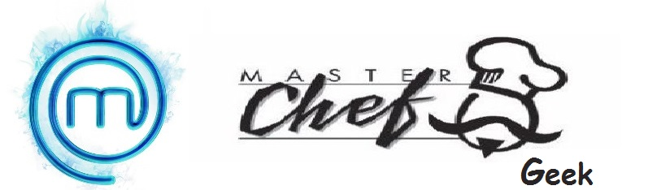

Las personas que nos conocen saben que vivimos para programar y cocinar. Hemos creado este sitio para compatir algunas de nuestras recetas favoritas, así como compartir recursos gatronómicos en línea. ¡Bon Appetit!
Acerca del Sitio©Copyright 2019, aquí_va_tu_nombre